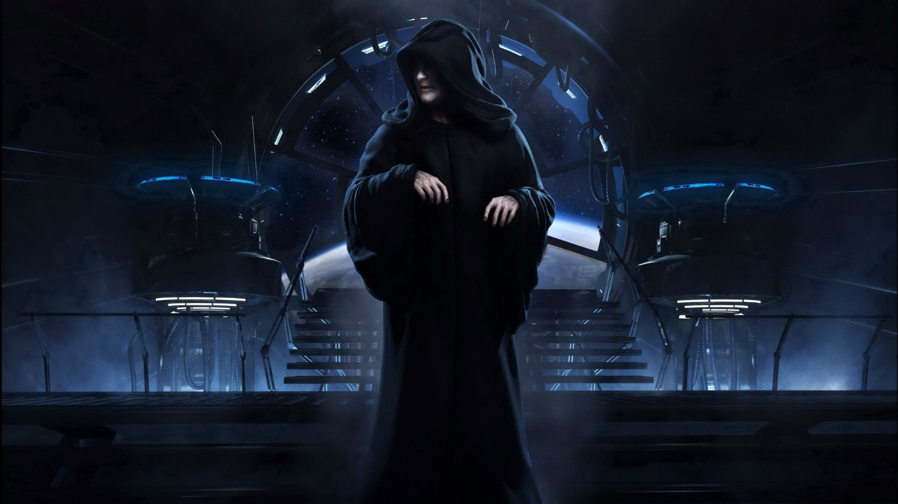
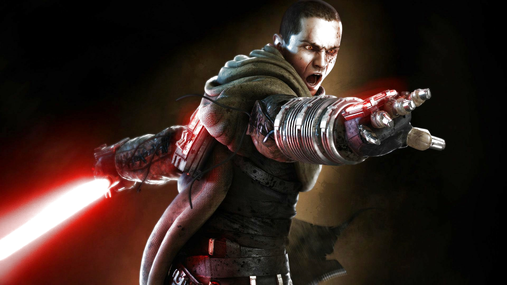
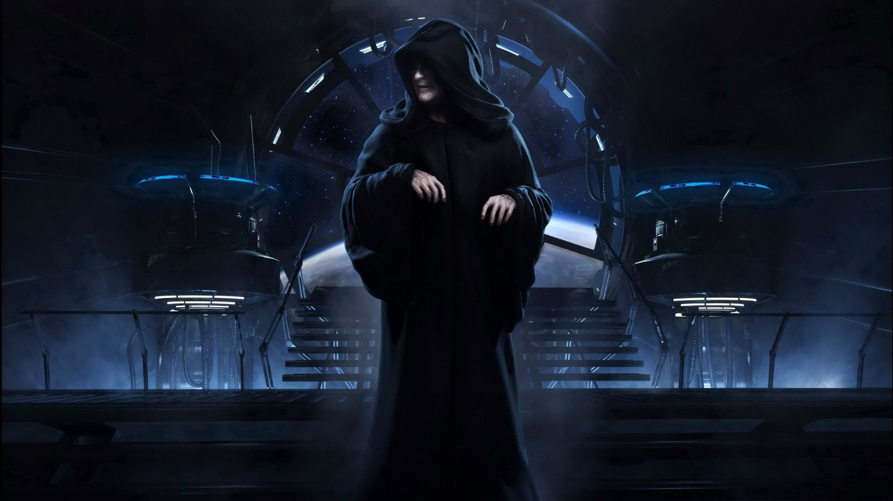
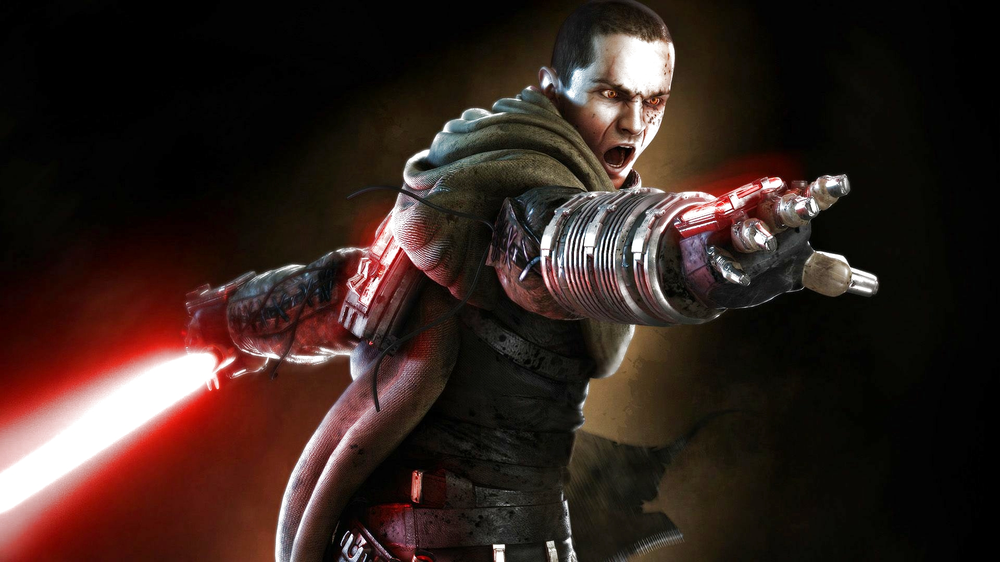

Darth Vader
Darth Vader, anteriormente conhecido como Anakin Skywalker, é um Lorde Negro dos Sith e aprendiz do Imperador Palpatine, também possuí um aprendiz, porem secreto onde ensina o Lado Negro da Força. Vader planejava que junto ao seu aprendiz, destruiriam o Imperador.
Darth Maul
Darth Maul foi um Lorde Sith Zabrak Dathomiriano que viveu durante os anos finais da República Galáctica. Maul nasceu de Mãe Talzin e criado como um Irmão da Noite em Dathomir, antes de ser tomado por Darth Sidious como seu aprendiz.
General Grievous
O General Grievous é um brilhante estrategista militar separatista e um temido caçador dos Jedi, conhecido pela crueldade e por uma tosse seca.
Kylo Ren
Filho dos heróis Rebeldes Leia Organa e Han Solo, Ben foi treinado como aprendiz Jedi de seu tio Luke Skywalker, na sua nova Academia Jedi. Entretanto, Ben foi atraído pelo lado sombrio por influência do misterioso usuário da Força chamado Snoke e se tornou obcecado por assumir o legado do seu avô, Darth Vader. Tornando-se assim Kylo Ren.
Palpatine
Palpatine, também conhecido como Darth Sidious, foi o último Chanceler Supremo da República Galáctica e o primeiro Imperador do Império Galáctico. Ele foi um Lorde Sombrio de Sith que seguiu a Regra de Dois e foi considerado um dos mais poderosos Lorde Sith que já existiram.
Starkiller
"Starkiller" é o codinome do Galen Marek, sensível à força, que se torna um aprendiz de Darth Vader durante a era sombria do Império Galáctico.